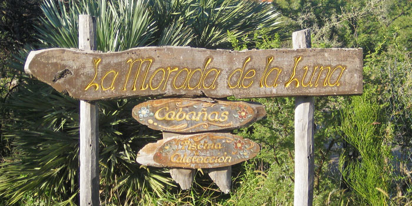
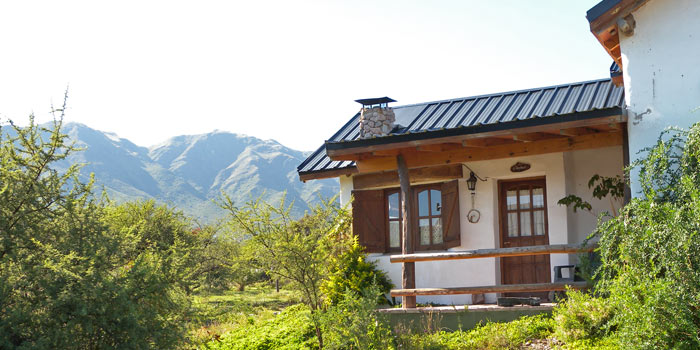
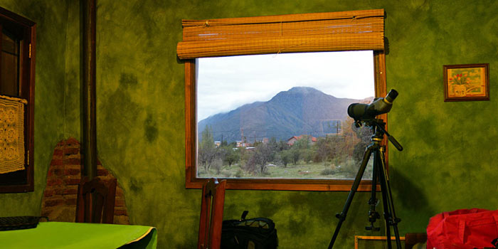
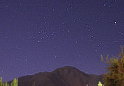
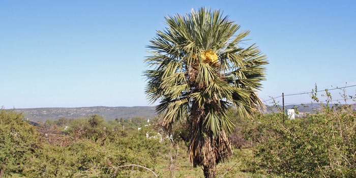
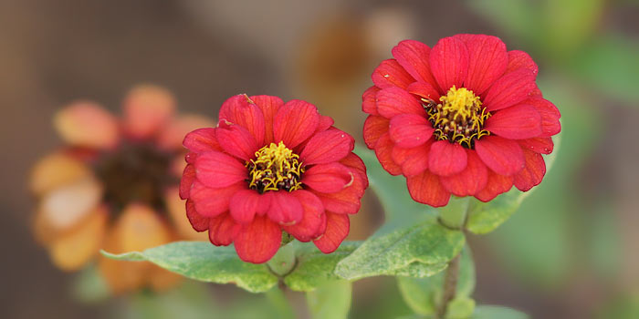
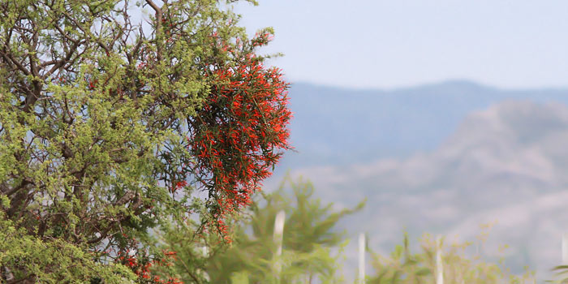
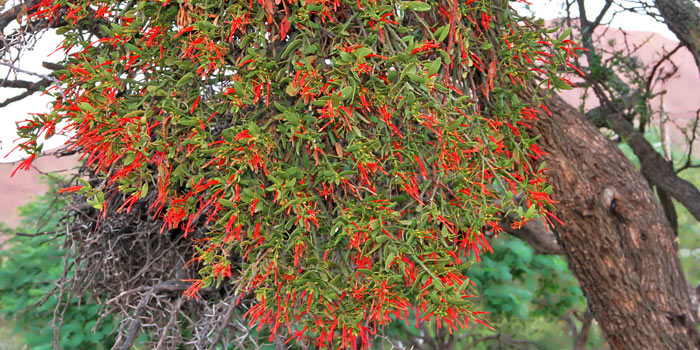
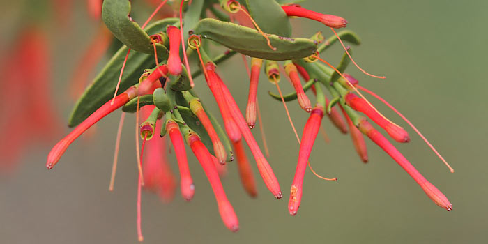

 |
Nuestro "campamento base" fue La Morada de la Luna, un emprendimiento de Mónica y Gustavo ubicado en la periferia sur de Capilla del Monte. Aquí alquilamos una cómoda y atractiva cabaña. Recomiendo especialmente el lugar por la atencíon esmerada y el hermoso parque. |
Our base camp was La Morada de la Luna, in the southern suburbs of Capilla del Monte, where we rented an attractive and very functional bungalow. I can highly recommend the place for the excellent service and the wonderful setting. |
 |
Las cabañas aqui tienen nombre, y a nosotros nos tocó "El Chañar". El ventanal tiene una excelente vista del cerro. Muchas de mis mejores fotos de aves cordobesas las logré en el parque, ya que aún mantiene vegetación nativa. Cacholotes, Calandritas, Canasteros, Picaflores y Crestudos, entre otras aves, recorren confiados el predio a cualquier hora. |
Our bungallow was named "El Chañar". The main window has a wonderful view of the Uritorco. Many of my best pictures of Córdoba birds were taken within the grounds, as it retains some of the native vegetation. Brown Cacholotes, Canasteros, Hummingbirds and many other birds have a run of the place all day long. |
 |
La ventana enmarca un cuadro perfecto: el siempre presente Uritorco, o el "Uri", como le dicen allí. Las paredes interiores del bungalow estaban pintadas artísticamente en colores intensos y saturados, y muy bien elegidos. |
A room with a view: a picture-window if ever you saw one! Once again, the ubiquitous Uritorco in full view. The interior walls of the bungalow were artistically painted in rich and bright colors that were very well chosen. |
 |
Las Estrellas del Uritorco
Un video nocturno "time-lapse" de 10 segundos que muestra el paso de las estrellas alrededor del Uritorco |
The Stars of the Uritorco
A short 10-second time-lapse filmed at night showing the movement of the stars over the Uritorco |
 |
Esta palmera Caranday florecida esta en el fondo del predio. |
A flowering Caranday palm was at the back of the property |
 |
Las zinias silvestres, flor característica de la zona, tapizan el parque |
Wild zinias, so typical of the surroundng hills, are found across the property |
 |
La "liga", una planta hemiparásista (usa el árbol, pero también le trae beneficios), crece en cada árbol de espinillo. Era garantía de presencia de picaflores, que custodiaban celosamente este recurso alimenticio y no dudaban en perseguir velozmente a cualquier intruso que osara acercarse. |
The "liga" is a semi-parasitic plant the grows on each Acacia tree. It's presence ensures that hummingbirds will be about, as they defend this food supply with fast and agressive chases against any daring intruder. |
 |
Otra "liga" |
Another "liga" |
 |
Detalle de la flor |
A close-up view of the flower |
A TENER EN CUENTA:
Pulsando sobre las fotos de fauna puedes ampliarlas.
Para cerrar, pulsa en la cruz en el ángulo INFERIOR DERECHO. |
TO BEAR IN MIND:
You can enlarge the photos of birds and insects by clicking on them.
To close, click on the cross in the LOWER RIGHT corner. |
 |
Picaflor de Barbijo (hembra), una de las especies con el pico más largo de Argentina |
Blue-tufted Starthroat (female) has one of the longest bills among the hummingbirds of Argentina |
 |
Picaflor de Barbijo (macho) en plumaje de reposo |
Blue-tufted Starthroat (male) in resting plumage |
 |
Una tropilla de 5 o 6 Crestudos siempre se encontraba recorriendo el terreno en busca de alimento |
A troupe of 5 or 6 of the very terrestrial Larl-like Brushrunner were always wondering about the grounds, searching for food. |
 |
El Cacholote Castaño anidaba a metros del bungalow, y recorría el suelo buscando ramas espinosas para ir fortaleciendo su nido |
A family of Brown Cacholotes had a nest meters from the bungalow. They also roamed the grounds in search of thorny twigs to expand their nest. |
 |
Otra del Cacholote |
Another Brown Cacholote |
 |
Chinchero Grande, siempre dando vueltas por el predio |
Scimitar-billed Woodcreepers were always around |
 |
En toda la zona andaba el pequeño Canastero Chaqueño. Así como las especies marrones precedentes, pertenece a la familia de los furnáridos, el grupo de aves más característico de Sudamérica |
The Short-billed Canastero was all over the area. As with the previous brown-colored species, it belongs to the Furnarids, South America's most characteristic group of birds. |
 |
Un muy esquivo y oculto Gallito Copetón cantaba en un predio vecino, y logré ésta y otras fotos |
A wary and skulking Crested Gallito called out from a neighboring lot, at once getting my attention. I was able to take this and other photos |
 |
Un juvenil de Torcacita Común |
An immature Picui Ground-Dove |
 |
Una de las tantas Paloma Ala Manchada, bastante mansas por cierto, que hallaban refugio en el predio |
One of the many Spot-winged Piegeons, that seemed quite tame and had found refuge at the grounds
|
 |
No sé muy bién que hacía este Chimango posado en un arbusto a 5 metros de la puerta del bungalow, pero el sol de atrás lo hacía un interesante sujeto para la foto. |
Not sure what this Chimango Caracara was doing on a bush a mere 5 metrs from our bungalow door, but it made for a good back-lit subject |
 |
El Birro Común, que no conocía, casi nunca bajaba de los cables eléctricos.
Sorprende por sus pases acrobáticos |
Two or 3 Cliff Flycatchers were often about, but they rarely came down from the electrical wires. They can be seen doing some very acrobatic fly-bys, which I emulated as I returned to the bungalow, for I was happy to see this bird for the first time: a lifer! |
 |
La Monjita Blanca apareció el último día. En vuelo muestra la punta de las alas negras. |
A pair of White Monjitas showed up un the last day. In flight they expose the balck tips of their wings. |
 |
Una pareja de Calandritas, ave de monte por excelencia, recorrían tranquilas los espinillos en busca de alimento: pequeños insectos y arañas. Estas pequeñas y delicadas avecillas habitualmente andan de a dos. A pesar del acertado nombre, pues realmente parecen pequeñas calandrias, en realidad no estan emparentadas con ese grupo, sinó que pertenecen a la familia de los tiránidos. |
A pair of Greater Wagtail-Tyrants were present often investigating the numerous Acacias for insects and spiders. These delicate birds are typical of the "monte" habitat and often go about in pairs. |
 |
Otra. |
Another. |
 |
El vistoso macho del Sietecolores, o Naranjero, estaba un poco lejos para hacer una buena foto, pero no deja de ser una joyita de color. |
The colourful Blue-and-yellow Tanager was a little far from my camera to get a good shot, but it is still a lovely bird to see. |
 |
La hembra del Cortarramas se dejó acercar. Aún le quedaba en el pico la parte de un pétalo . |
The female White-tipped Plantcutter allowed me to approach. It still had a bit of a petal on its bill. |
 |
El Pepitero de Collar era una de las especies más frecuentes en Capilla del Monte, así que pospuse de hacerle fotos para concentrar en lo más raro y difícil. Pero cuando advertí que el pico era mucho más colorido de lo que vemos en Buenos Aires ya era tarde para hacerle una buena foto. He aquí la mejor, rama de por medio. |
The Golden-billed Saltator was one of the more common birds at Capilla del Monte, so I defered taking pictures to concentrate on the more rare and difficult ones. By the time I realized that the bill of the Saltator was far more colourful than how we see it in Buenos Aires, it was too late to hope for a good shot. Here is the best - if you can ignore that branch! |
 |
Por útlimo, el tan abundante Chingolo no podía faltar en el predio de La Morada de la Luna, y me regaló esta foto a corta distancia. |
Last but not least, the very common Rufous-collared Sparrow could not be missing at the grounds of La Morada de la Luna, and allowed me this close-up. |
|


{kind=link}
{kind=link}
{kind=link}
{kind=link}
{kind=link}
{kind=link}
{kind=link}
{kind=link}
{kind=link}
{kind=link}